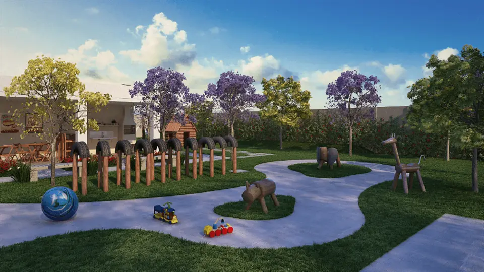

Imagens


Galeria
Imagens ilustrativas, de caráter artístico, conforme material da incorporadora.

Apartamentos de1 e 2 quartos em Bangu
Conheça o empreendimento Esplendor, com apartamentos de 1 e 2 quartos, lazer, conforto e segurança de condomínio fechado.
Metragens, tipologias e disponibilidade conforme material oficial da incorporadora, sujeitos a alteração sem aviso. Valores e condições confirmados na tabela vigente. Seleção e atendimento: Paulo Cotrim, CRECI-RJ 77677-F.
Imagens ilustrativas, de caráter artístico, conforme material da incorporadora.